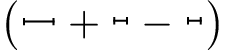
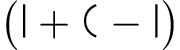
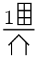
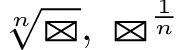
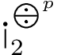

Transcendental Algebra
Foreword
In 2003, Ksenia Gilyarova wrote a problem about a constructed writing system known as Transcendental Algebra, created by Jacob Linzbach, for the first International Linguistics Olympiad. An easily understandable and accessible resource documenting the details of this language has since been unavailable to years of subsequent IOL contestants. 14 years later, we have located a copy of Linzbach's original book Transcendent algebra, ideografie matematical, experiment de un lingue filosofic, transcribed it, and translated it to English for the benefit of anyone interested in learning more about Linzbach's work.
The book is written in an early version of an international auxiliary language called Occidental—later renamed Interlingue—which was created by Edgar de Wahl. As Linzbach published his book in 1921 a year before Wahl published the official book on Occidental in 1922, some of the word forms and usage do not match what is documented in other resources, of which there are few. Nevertheless, our interpretation of the book is, we hope, as close as possible to Linzbach's original ideas. He also included a 2-page inset giving examples of Transcendental Algebra statements and their translations in German, French, Russian, and Estonian; we have transcribed these examples as well and translated them to English.
We hope you find the following transcription and translation of Transcendent algebra to be as interesting as we did, as well as informative and helpful in learning about Linzbach's "philosophical language".
Chuanshu Jiang (IOL team Australia 2017)
Andy Tockman (IOL team USA 2017)
Table of contents
Author's noteIntroduction
Symbolics
Addition
Subtraction
Multiplication
Division
Exponentiation
Radication
Interpretation of all exponents
Logarithms
Equations
Conclusion
Some examples
Author's noteDe autor
The present printed brochure is extracted from detailed work.
Li present brochur autolitografic es extract ex detaliat labor.
Desiring to inform the European reader of this new problem,
Desirante informar li letor European peri ti nov poblema,
I have asked the well-known linguist Mr. Edgar de Wahl to translate the text of this brochure
mi ha petit li conosset cosmoglottist sr. E. de Wahl traducter li textu de ti ci brochur
to his universal auxiliary language “Occidental”,
in composit de il lingue universal auxiliari "Occidental",
which being based on roots and suffixes extracted from international words,
quel essent basat sur radicas e suffixes, extractet de paroles international,
and combined for maximum simplicity of grammar and word formation,
e combinat per max simplic grammatica e parolformation,
is comprehensible without study to every person of western civilization.
es comprensibil sin studia a omni hom de occidental civilisation.
As a result there has appeared an interesting symbiosis of two artificial languages:
In resultat ha apparet un symbiose interessant de du lingues artifical:
one constructed language, aspiring to the role of international auxiliary language,
un pasilalie, aspirant ad role de auxiliari lingue international,
and a prospective constructed script, which is, like mathematics, a common language;
e un pasigrafie, volent esser, quem matematica, un lingue commun;
the expressions of one language explain here the expressions of another.
li expressiones de un lingue explica ci li expressiones del altri.
I will be grateful to the reader for communication of remarks.
Mi va esser mersios al letor por communication de remarcas.
Jacob Linzbach.
Jacob Linzbach.
IntroductionIntroduction
Leibniz writes:
Leibniz scri:
"A part of the secret of the success of algebra consists in its characteristic;
"Un part del secrete del success de algebra consiste in su caracteristica,
that is, in the art of utilizing symbols.
i.e. in arte utilisar symboles.
Therefore there appears the possibility to imagine the creation of new algorithms,
Pro to appare possibilitia imaginar li creation de nov algoritmes,
of new algebras, which study other relations too, different than relations between quantities.
de nov algebras, studiant anque altri relationes, different de relationes inter quantitas.
Furthermore, there appears the hope of reducing all thoughts to a combination of characters,
Mem plu, -- appare li espera reducter omni consideration a un combination de signes,
and there appears the possibility of pondering over a time when two philosophers, like two mathematicians,
e appare possibilita meditar super tel tempor quande du filosofos, simil du matematicos,
instead of [having] infinite disputes, will take pens in hands and, sitting at a table, will replace disputes with calcuation.
in vice de infinit disputes va prender plumes in manus e sedent ad table va vicear disput per calculation.
The common mathematics transforms itself thus in calculation of thoughts (calculus ratiocinator) and conflates itself with logic."
Li commun matematica transforma-se talmen in calcul de considerationes (calculus ratiocinatus) e confunde con logical."
This problem of universal mathematics is solved by transcendental algebra.
Ti ci problema de universal matematica es solvet per transcendent algebra.
SymbolicsSymbolica
To constant quantities a, b, c, d… correspond in transcendent algebra definite concepts represented by figures, for example:
A quantitas constant a, b, c, d… corresponde in transcendent algebra definit conceptiones, representat per figures, por exemple:
Variable quantities x, y, z, t… represent themselves with symbols:
Quantitas variabil x, y, z, t… representa se per schemas:
Beyond figures and symbols, also used are numbers 1, 2, 3, 4… and letters a, b, c, d…, x, y, z, t…
Ultra figures e schemas es usat anque cifres 1, 2, 3, 4… e litteres a, b, c, d…, x, y, z, t…
Figures, symbols, numbers and letters join themselves using mathematical characters:
Figures, schemas, cifres e litteres junte se per matematical signes:
Concepts that are not able to be expressed immediately [through basic combinations of glyphs] represent themselves by means of mathematical operations.
Concepiones, ne possent esser expresset inmediatnen, representase por medie de matematical operationes.
In calculation of concepts the value of all the laws of common algebra is conserved.
In calculation de conceptiones conserva valor omni leges de algebra commun.
The results of calculations are found intuitively by way of method of interpretation, used in philosophy.
Li resultates del calcul es trovat intuitivnen per medie de metode de interpretation, usat in filosofie.
AdditionAddition
plus, and, with, present
plus, e, con, presentie
horse and cow
cavall e vacca
domestic animals
animales domestic
animals
animales
 carpentry tools
carpentry tools
instrumentes de carpintero
stars
sideres
I, you, and he/she
mi, tu e il
house #1 and house #2
dom № 1 e dom № 2
June 9th, 1874
9 Juni 1874
big house and small house
granddom e dometto
giant and dwarf
gigant e pigméo
man with umbrella
homo con parapluvie
SubtractionSubtraction
Subtraction is the reciprocal operation to addition.
Subtraction es operation reciproc a addition.
 minus, without, not, absent
minus, without, not, absent
minus, sin, ne, absentie
fat with skinny without skinny is fat
grossi con tenui sin tenui es grossi
long
long
curved
curb
heavy
ponderos
longer
plu long
 car body/box
car body/box
carrebux
walls
mures
body, trunk, torso
corpor, trunc, torso
Impossibility of subtraction of negative concepts:
Impossibilitá de subtraction da negativ conceptiones:
person
homo
person with umbrella
homo con parapluvie
person without umbrella (during rain)
homo sin parapluvie (durante pluvie)
person without heart
homo sin cordie
person with absence of heart is person without heart
homo con absentie de cordie es homo sin cordie
person not without heart is person with heart
homo ne sin cordie es homo con cordie
 I, not I, rest of the world
I, not I, rest of the world
mi, ne mi, mundi
me without you, solitude
mi sin tu, solitaritá
present without future, is not hope
present sin futur, ne es espera
right without left, absence of symmetry
destri sin left, absentie de symmetrie
inside without being outside, state of lacking freedom
intern sin esser extern, statu de inliberitá
blind
ciec
open
apert
Algebraic addition of figures with symbols, letters, and numbers:
Addition algebraic de figures con schemas, litteres e cifres:
the book is on the table
libre es sur table
under the book is the table
sub libre es table
on, not on
sur, ne sur
not on, under
ne sur, sub
on the table, not on the book, under the book
sur table, ne sur [libre], sub libre
the mill is behind the house, in front of the mill is the house
molino es dope de dom, avan molino es dom
the mill is in front of and to the right of the house, the house is behind and to the left of the mill
molino es avan destre de dom, dom es dope left de molino
not in front of means behind
ne avan significa dope
I am in the house
mi es in dom
around me is the house
circum mi es dom
outside of me is the house
extern mi es dom
the bench is between the house and the tree
banc es inter dom e arbor
next to the bench is the house and the tree
apu banc es dom e arbor
Algebraic, using letters:
Algebraic, per litteres:
the bench is to the right of the house and to the left of the tree
banc es destre de dom e left de arbor
to the left and to the right of the bench are the house and the tree
a left e a destre de banc es dom e arbor
 15 of some units away from the house
15 of some units away from the house
alqui 15 unités distant de dom
from the house
de dom
to the house
ad dom, til dom
from the heart
de cordie
to the heart
ad cordie, til cordie
from above,  to above
to above
de supre, ad supre
MultiplicationMultiplication
A. Multiplication of figures by numbers.
A. Multiplication de figures per número.
three horses
tri cavalles
100 houses
100 domes
houses, trees, people, horses
domes, arbores, homos, cavalles
 7 days is a quarter of a month, a week
7 days is a quarter of a month, a week
7 dies es ¼ mensu, seman
weeks
semanes
12 hours is half a day
12 hores es demi die
365 days is a year
365 dies es un annu
years, times
annus, tempores
B. Multiplication of figures by figures
B. Multiplication de figures per figures
Professor John Perry writes the following on the multiplication of vector quantities in his ‘Practical Mathematics’:
Professor John Perry scri in su Practical Matematica peri multiplication de quantitas vectora secuent:
If I were asked to multiply 2 tables by 3 chairs I would not refuse; I would say,
"Si on va petir me multiplicar 2 stules per 3 tables, mi ne var refusar; mi var dir,
6 chair-tables. But if I were asked to say what I mean by a chair-table, I would refuse to answer
que to var esser 6 stulotables. Ma mi va refusar respoder, quo esse stulotable,
because nobody has ever given a meaning to the term.
Proque ancor nequi ha provat attribuer qualcunc signification a tal termin.
But I do know that when this sort of thing comes into a Physical Problem,
Tamen mi save que tal productes recontra se in solution de problemas fisical,
we can always give a useful meaning.
e li termines correspondent sempre recive un util logical signification.
This is beyond ordinary Algebra,
Ti considerationes sta ultra limites de algebra commun,
and yet our processes are carried on by the rules of Algebra.
quancam li process self de calculation es operat segun regules de algebra.
Please observe, that I do not say that 2 tables x 3 chairs = 2 chairs x 3 tables.
Ples remarcar, que mi ne posse asserter que 2 tables x 3 stules = 2 stules x 3 tables.
Whether this is or is not true, depends on the meaning we attach to the whole process."
To depende del sense, quel noi attribue al tut process.”
Here is a visual interpretation of this problem:
Ec un aspectiv interpretation de ti problema:
6 places (to sit on a chair at the table)
6 plazzes (por seder sur stul ad table)
Variant interpretation:
Interpretation variabil:
6 places, place
6 plazzes, plazz
Other examples:
Altri exemples:
strength of light of 150 candelas
fortie de luce 150 candeles
[amount of] work of 50 horse-drawn carriages [50 horsepower]
laboreffect de 50 carretades
100 plates served to guests
cent plates servit a hospites
 work, laziness [quality of not working]
work, laziness [quality of not working]
labor, deslaboritá
armed forces, armed forces armed in different ways
fortie armat, f.a. de armatur different
 marriage, celibacy
marriage, celibacy
mariagie, celibatu
widower
viduagie de marito
widow
viduagie de marita
 polygamy, polyandry
polygamy, polyandry
polygamie, polyandrie
 6 marriages
6 marriages
6 maritagies
family,  not-family
not-family
familie, ne-familie
 family without children
family without children
familie sin infantes
 being orphaned
being orphaned
orfanagie
 friendship
friendship
amicitá, amicagie
 company
company
companie
society
societé
eating [is taking place],  no eating
no eating
manjada, nemanjada
 starvation, no eating due to lack of food
starvation, no eating due to lack of food
fame, nemanjada pro manca de pan
abundance, no eating from lack of eating, nobody to eat
abundantie, nemanjada pro manca de manjant, nequi por manjar
The product is a function of factors.
Product es function de factores.
Multiplication creates from given concepts a new one of greater reach/capacity, for example:
Muliplication crea ex dat conceptiones un nov de plugrand capacitá, p.e.:
man, pipe, smoking
homo, pip, fumada
drunkenness, sobriety
ebrietá, sobrietá
meal, nutrition
nutritura, nutrition
wine, beer, water
vin, bir, aqua
agronomy
agronomie
commerce, carpentry
commercie, carpinterie
astronomy, philosophy
astronomie, filosofie
acquaintance
conossentie
world, universe
mundi, cosmo
reading (matter), writing, illiteracy
letura, scritura, analfabetism
aviation
aviation
conversation, speech
conversation, parla
silence, monologue
silentie, monolog
thinking is talking
pensada es parlada
C. Multiplication of figures by symbols and letters
C. Multiplication de figures per schemas e litteres
head, body, torso, forehead
cap, córpor, torso, front
chin, nape, height
menton, nuc, altore
base (of triangle), cathetus [leg]
bas (de triangul), cathete
seed, room, court[yard]
sem, chambre, curt
D. Multiplication of symbols by symbols
D. Multiplication de schemas per schemas
square, parallelogram, cube
quadrat, parallelogramm, cub
prism, cylinder, ellipsoid
prisma, cylindrtion, ellipsoid
communication, concentration
communication, concentra[-tion]
oscillation, perforation
oscillation, perforation
DivisionDivision
A. Division of figures by numbers
A. Division de figures per números
The operation is reduced to multiplication by the reciprocal number:
Li operation es reductet ad multiplication per numer reciproc:
half-house, flank [wings]
demidom, flanc
hour
hor
B. Division of figures by figures
B. Division de figures per figures
Division is the reciprocal operation to multiplication. The meanings of the reciprocals
Division es operation reciproc a multiplication. A significationes reciproc
correspond to the concepts of total and fractional, for example:
corresponde conceptiones total e fractional, p.e.:
whole house, some part of house
dom integri, alqui part de dom
part of house, namely the window
part de dom, nominat fenestre
window, of house
fenestre, de dom
 roof of house, walls of house
roof of house, walls of house
tecte de dom, mures de dom
head of horse,  neck of horse
neck of horse
cap de cavall, col de cavall
mane of horse, body of horse
crinage de c., corpor de cav.
feet of horse, hoof of horse
pedes de cav., huf de cav.
knee of horse, chest of horse
genu de c., pector de c.
Division creates from given concepts a new one of lesser reach/capacity
Division crea ex dat conceptiones un nov de minu grand capacita
by the adding of attributes in the form of the denominator:
per adjuntion de attributes in form de nominator:
houses in general, every house
dom in general, chascun d.
horse's house, a special case of the concept of houses
dom de cavall, un casu partial del conception dom
some person, one person
alqui hom, un hom
person of the pipe, smoker
hom de pipe, fumator
room
chambre
room of smoking, smoking room
chambre de fumation, fumatoria
nesting bird, cuckoo
avio nidant, cucú
bottom window
fenestre de bass
tomorrow
deman
yesterday
yer
woman of man, married woman
femina de mascul, femina maritat
man of woman, married man
mascul de femina, mascul maritat
husband, wife, children
marito, marita, infantes
father and mother are parents
patre e matre es genitores
brother, sister
fratre, sestra
head of man
cap de homo
person of head, leader, a special case of the concept of person
homo de cap, chef, un casu partial del conception homo
people in general, every person
homo in general, chascun h.
single person, individual
homo singul, individue
ExponentiationPotentiation
Exponentiation is a function of figures, signifying the representation of an event in cinematographic form:
Potentie es un function de figur, significant representation de eveniment in form cinematografic:
flight
vol, volagie
oscillation
oscilllation
walking
marcha
Moments of the event are factors.
Momentes de eveniment es factores.
The product in the sense of the exponentiation is a representation of the event.
Product in sens de potentie es representation de eveniment.
The number of moments or the exponent of the exponentiation signifies fluctuation (rhythm) of the event:
Numero de momentes o exponent de potentie significa fluxion (rithm) de eveniment:
life
vive
talking, pronunciation
parla, pronunciation
writing
scrition
knitting
tricotagie
Elevation of a figure in total exponentiation signifies an event,
Elevation de figur in total potentie significa un eveniment,
coming from the given concept, as of subject, for example:
exfluent del dat conception, quam de subyect, p.e.:
forge hammer, forging
martell forge, forgeada
RadicationRadication
Radication is the reciprocal operation to exponentiation.
Radication es operation recproc a potentiation.
bird, person
avio, homo
feet,  pendulum
pendulum
pedes, pendul
Extraction of the root, or elevation to a fractional exponent
Extraction de radica, o elevation in fractional potentie
signifies an event, guiding to the given concept, as of object, for example:
significa un eveniment, ductent al dat conception, quam ad obyect, p.e.:
making of an envelope
fabrication de covert
growth of a tree
cresentation de arbor
maturing of a fruit
maturijation de fruct
beginning of a day, sunrise
comensa de die, aurore
beginning of a night, sunset
comensa de nocte, purpur de vespere
birth
nascentie
beginning of puberty
comensa de pubertá
Interpretation of all exponentsInterpretation de omni potenties
A. Numerical exponents
A. Potenties numeral.
a) Positive exponents from 0 to infinity.
a) Potenties positiv de 0 ad ∞.
beginning, principle, idea, material, etc. of an object
comensa, principe, idee[,] materiale ec. de obyect
 process of becoming, preparation, origin of the object
process of becoming, preparation, origin of the object
processe de devenition, preparation, origina del obyect
the object itself, object as such, the object exists
obyect self, obyect quam tal, obyect existe
function of an object
function del obyect
end of an object, in the sense of transubstantiation in a product, relative to which the object itself appears as the material
fine de obyect, in sense de transsubstantation in un product, relativa quel l object self appare quam materiale
Examples:
Exemples:
steel, as pen material
stal, quam materiale de plum
process of making a pen
process de fabrication de pl.
pen at hand, pen exists
plum parat, plum existe
function of pen, pen writing
function de plum, plum in scrition
clay, jar material
argil, material de cruche
making of a jar
fabrication de cruche
jar itself, jar exists
cruche self, cruch existe
function of jar, jar being used
function de cruche, cruche in usation
household
menage
gold
aure
printing of money
stampation de monete
money, money exists
monete, monete existe
use of money, circulation
usation de moné, circulation
wealth
richess
primordial material
materie primitif
 origin of the earth
origin of the earth
origine de terre
the earth, the earth exists
terre, terre existe
life of the earth
vive de terre
the world
mund
embryo
embrion
infant/child
infant
adult
adult
elderly, senile
velón, senil
corpse
cadáver
ability to emit sounds
capabilitá emisser sones
origin of speech
origina de parlada
language, speech in contemporary usage
lingue, parlada in stand contemporan
usage of words
usation de paroles
literature
litteratur
Indefinite concepts:
Conceptiones indefinit:
nothing (not in the sense of zero!)
nequo (ne in sens de null!)
origin of something
origina de alqui cose
something, a unit exists
alquicose, unité existe
function of a unit
function de unité
everything
omne
b) Negative exponents.
b) Potenties negativ.
Negative exponents are fractions
Potenties negativ es fractiones
and, keeping with the definition of division, express qualities, for example:
e, conform a definition de division, expresse qualitás, p.e.:
of houses
domal, de dom
of steel
stalin, de stal
of the world
mundal, de mund
of apples
pomal, de pom
language of the world
lingue de mund
philosophic language
lingue filosofic
language of the future
lingue de futur
B. Exponents of figures
B. Potenties figural.
a) Total exponents express the active form of the verb:
a) Potenties total express form activ de verb:
person exists, person is
homo existe, homo es
person chops
homo hacca
person chops tree
homo hacca arbor
the woman knits a sock
femina tricota strump
person marches
homo marcha
horse runs
cavalle curre
clock ticks
horloj tictaca
clock rings
horloj clocha
train moves itself
tren move se
person speaks
homo parla
rooster crows
gallino canta
dog barks
can aboya
 bird flies
bird flies
avio vola
person sees
homo vide
he/she reigns, he/she is a king/queen
il rege
he/she lives
il vive
I make a pen
mi prepara plum
I write
mi scri
I use a pen
mi usa plum
I practice a literary profession
mi practica profession de litterator
I prepare steel for a pen
mi prepara stal por plum
Examples of conjugation:
Exemple de conjugation:
I write, you write, he/she writes
mi scri, tu scri, il scri
we write, you(pl.) write, they write
noi scri, vo scri, ili scri
I will write
mi va scrir
I wrote, I have written
mi fe scrir, mi ha scrit
you will not write
tu ne va scrir
you have not written
tu ne ha scrir
not him/her writes, someone else writes
ne il scri, altri scri
I write now
mi scri nu
now, not now, some other time
nu, ne nu, altriquande
I sit here
mi side ci
 he/she stands there in front
he/she stands there in front
il sta ta avan
 she lives to the left
she lives to the left
illa habita (domicila) ad left
I (masculine)
mi (mascul)
I (feminine), you (feminine)
mi (femina), tu (femina)
I (unspecified gender)
mi (genere indifinit)
I spoke a few times
mi fe parlar quelc vezes
speak!
parla!
 I write and think, I write pensively
I write and think, I write pensively
mi scri e pensa, mi scri pensante
I write and don't think, I write automatically
mi scri (e) ne pensa, mi scri automaticmen
he/she talks with haste
il parla hastante
he/she talks without haste
il parla sin hasta
he/she is in a hurry, he/she is not in a hurry
il hasta, il ne hasta
I study
mi studia
scientist
scientist
student, scholer
student, scolero
professor
professor
Growing exponents [exponents of exponents]:
Potenties crescent:
I prepare to write
mi prepara scrir
I sit to write
mi sedenta me scrir
you go to sleep
tu ea dormir
he/she goes (walks) to reap [the crop]
il ea (marcha) falcear
I want to eat
mi vole manjar
I must walk
mi deve marchar
you can pay
tu posse payar
you may speak
tu have jure parlar
b) Fractional exponents express the passive form of the verb:
b) Potenties fractional expresse forme passive de verb:
I see, I am seen
me vide, mi es videt
the house is seen
dom es videt
I see the house
mi vide dom
 the person chops the tree
the person chops the tree
homo hacca arbor
the tree is chopped by the person
arbor es haccat de homo
the tree is chopped by the person
arbor es haccat de homo
the woman knits a sock
femina tricota strump
the sock is knitted by the woman
strump etricotat de f.
the letter is written
epistol es scrit
speech is spoken
parla es parlat
she loves
illa ama
he/she is loved, someone loves him/her
il es amat, on ama le
I have been loved
mi ha esset amat
I speak
mi parla
you will be spoken of
de tu va esser parlat
I am, I exist
mi es, mi existe
I am created, existence is given to me
mi es creat, a mi es dat existentie
creature
creatur
c) Irrational concepts.
c) Significationes irrational.
spouse
marit
friend
amico
colleague
colleg
 member of society
member of society
membre de societé
child of the same mother
infant de sam matre
celestial object
ether
the world is created by God
mund es creat per Deo
the forest speaks
forest parla
the clock walks
horloj marcha
d) Imaginary concepts
d) Significationes imaginari
imaginary quantity
quantatitá imaginari
is, exists
es, existe
stops existing, turns itself imaginary
cessa esser, fa -se imaginari
is not, does not exist
ne esse, ne existe
turns itself [real], becomes, stops being imaginary
fa-se, deveni, cessa esser imaginari
 day
day
die
day, which stops being, evening
die, quel cessa esser, vesper
not-day, night
ne-die, nocte
day, which starts, night, which stops being, morning
die, quel comensa, nocte, quel cessa esser, matine
friendship
amcitá
end of friendship, beginning of enmity, argument
cessation de amicitá, origina de inamicitá, querell
enmity
inamicitá
end of enmity, renewal of friendship
cesation de inamicitá, renovation de amicitá
end of enmity is renewal of friendship
cessation de inamicitá es renovation de amicitá
Examples to translate:
Exemples por traducter:
LogarithmsLogaritmation
Logarithms express evolution. For example:
Logaritmation expresse evolution. P.e.:
chopping
haccation
writing
scrition
deformation
deformation
prolongation
prolongation
diminution
deminuation
illumination
illumination
signalisation
signalisation
origin of human from monkeys
origina de homo ex simie
formation of the earth
devenition de terre
formation of the world
devenition de mund
Examples to translate:
Exemples por traducter:
Mixed examples
Exemples mixt.
EquationsEquationes
Equations (and inequalities) are logical judgements:
Equationes (e inegalitá) es logical judicamentes:

a woman is a person
femina es homo
“a chicken is not a bird, and a woman is not a person” (Russian proverb)
"gallina ne es avio, femina ne es homo" (proverbie russ)
an elephant is larger than a horse
elefant es plu grand ca cavali
a mouse is smaller than a cat
mus es plu minim ca cat
a monkey is similar to a human
simio es simil a homo
I will construct a house
mi va constructer dom
he/she has constructed a house of lumber
il ha constructet dom de ligne
a human chops a tree of a building
homo hacca arbor de construction
a human chops a tree for building
homo hacca arbor por constructer
we construct a house in a forest
noi constructe dom in foreste
we construct a house, which is in a forest
noi constructe dom, qui es in foreste
the book you speak of, is it on the table?
parla tu del libre, que it es sur table?
I ask for a book
mi interroga per libre
is the book on the table?
es libre sur table?
yes, the book is on the table!
yes, libre es sur table!
 no, the book is not on the table!
no, the book is not on the table!
né, libre ne es sur table!
Transcendent algebra gives the possibility to deduct mathematically from given expressions all logical consequences. For example:
Li transcendent algebra da li possibilitá deducter matematicmen ex dat expession omni consequenties logical. P.e.:
he/she does not speak signifies something, that he/she has spoken
il ne parla significa alquicose, qui il ha dir
“if the child (of the mother) doesn’t cry, the mother (of the child) does not understand his/her wants (i.e. cries)” (Russian proverb)
"infant (de matre) ne plora, -- matre (de infant) ne comprende (i.e. plora)" (proverbe russ)
"there is no intelligence without language, no language without intelligence" (Max Müller)
"ne es intellectu sin lingue, ne es lingue sin intellectu" (Max Müller)
“intelligence without language and language without intelligence do not exist”
"intellectu sin lingue e. linge sin intellectu ne existe"
intelligence is language, truth
intellectu es lingue, logos
Etc.
E c.
ConclusionConclusion
Gallileo tells us:
Che Gallilei noi lee:
"Philosophy is written in a great book, which stands continually open for all and everyone (I mean the universe),
"Filosofie es scrit in grandissim libre, quel es sempre apert por omni e chascun (mi parla peri li mundo).
But one cannot understand it, who has not learned to read its language and characters, with which it is written.
Ma ne posse comprender it ti, qui avan ne ha aprendet leer su lingue e signes, per queles it es scrit.
And it is written in the language of mathematics, and its characters of triangles, circles and other mathematical figures."
E it es scrit in lingue matematical, e su signes triángules, circules e altri matematical figures."
The present brochure illustratively demonstrates the truth of these words.
Li veritá de ti paroles demonstra illustrativmen li present brochur.
Some examplesEinige BeispieleQuelques exemplesНекоторые примерыMōned näitused
person
Mensch
homme
человекъ
inimene
I, me
ich
je, moi
я
mina
you
du
tu, toi
ты
sina
he, him
er
il
онъ
tema
someone
Jemand
quelq'un
некто
keegi
Jacob Linzbach
Jacob Linzbach
Jacob Linzbach
Я. Линцбахъ
Jakob Linzbach
giant, large person
ein grosser Mensch Riese
gigant, grand homme
человечище
suur inim., hiiglane
dwarf, small person
Zwerg, Menschlein
petit homme, nain
человечекъ
väike inim., härjapōlvlane
me, with me
ich, mit mir
moi, avec moi
я, со мною
mina, minuga
not me, without me
nicht ich, ohne mich
pas moi, sans moi
не я, безъ меня
mitte mina, minuta
I am to the right of you
ich bin rechts von dir
je suis à droite (de toi)
я направо отъ тебя
mina olen sinust paremat kätt
you are to the left of me
du bist links von mir
tu es à ma gauche
ты налево отъ меня
sina oled minus pahemat kätt
he is earlier than you
er ist früher als du
il est plus tôt que toi
онъ раньше тебя
tema on varem kui sina
you are later than him
du bist nach ihm
tu es après lui
ты после него
sina oled hiljem kui tema
two people, people
zwei Menschen, Menschen
deux hommes, des hommes
два человекаб, люди
kaks inimest, inimesed
we, us
wir
nous
мы
meie
you(pl.)
ihr
vous
вы
teie
they
sie
ils
они
nemad
product
Produkt
Produit
произведение
[missing]
 friendship
friendship
Freundschaft
amitié
дружба
sōprus
company
Genossenschaft
association
товарищество
selts, kompanii
society
Gesellschaft
societé
общество
suurem selts
enmity
Feindschaft
inimitié
вражда
vaen
not company
keine Genossenschaft
pas une association
не товарищество
[missing]
crowd
Volksmenge
foule
толпа
seltsita olek
ratio
Verhältniss, Relation
Relation
отношение
[missing]
something human
etwas mënschliches
quelque chose d'humain
нечто человеческое
midagi inimlist
human society
mensliche Gesellschaft
societé humaine
общество человеческое
inimline seltskond
person of society
Mann der Gesellsch
homme de societé
человекъ общественный, человекъ общества
selts kondline inimene
your friendship
deine Freundschaft
ton amintié
дружба твоя
sinu sōprus
friend
Freund
ami
другъ
sōber
not a friend
kein Freund
pas ami
не другъ
[missing]
enemy
Feind
ennemi
врагъ
[missing]
comrade
Genosse
camarade
товарищъ
seltsiline
seed, embryo
Same, Embrio
semence, embryon
семя, эмбрионъ
seeme, liha
child
Kind
enfant
ребенокъ
laps
mature person
reifer Mensch
homme mûr
зрелый человекъ, совершенное
täieealine
parent
Erwachsener, Alter
personne adulte, parent
родителъ
vanem
deceased, spirit
Verstorbener, Geist
décédé, revenant
усопший, духъ
surnud, waim
the person lives, produces life
der Mensch lebt, erzeugt Kinder
l'homme vit, produit des enfants
человекъ живетъ, производитъ жизнь
inimene elab, sünnitab
the person exists
der Mensch existiert
l'homme existe
человекъ существуетъ
inimene on olemas
the person is alive, produced
der Mensch ist belebt, erzeugt
l'homme est animé, produit
человекъ оживленъ
inimene on elustatud, sünnitatud
I live, we live
ich lebe, wir leben
je vis, nous vivons
я живу, мы живемъ
mina elan, meie elame
you live, you(pl.) live
du lebst, ihr lebt
tu vis, vous vivez
ты живешь, вы живете
sina elad, teie elate
he lives, they live
er lebt, sie leben
il vit, ils vivent
онъ живетъ, они живутъ
tema elab, nemad elavad
I lived, I will live
ich lebte, ich werde leben
je vecus, je vivrai
я жилъ, я буду жить
mina elasin, mina saan elama
end
Abschaffung, Beseitigung, Ende
abolissement, ecartement, fin
прекращение действия
lōppemine
beginning
Erneuerung, Werden, Anfang
renouvellement, naissance, commencement
возобновление, становление
algus, saamine
the person is born, lives, and dies
der Mensch wird geboren, lebt und stirbt
l'homme naît, vit et meurt
человекъ родится, живетъ и умираетъ
ininene sünnib, elab ja sureb
I do not die
ich sterbe nicht
je ne meurs pas
я не умираю
mina ei sure
life
das Leben
la vie
жизнь
elu, elamine
birth
Geburt
la naissance
рождение
sündimine
dying
Sterben
[missing]
умирание
suremine
death
Tod
la mort
смерть
surm
I begin
ich fange an
je commence
я начинаю
mina hakkan peale
I finish
ich endige
je finis
я кончаю
mina lōpetan
physical
leiblich
corporel
плотский
lihalik
childlike
kindlich
enfantin
детский
lapselik
humanlike
menschlich
humain
зрелый
inimlik
adultlike, parental
eterlich
des parent
взрослый, родительский
vanemlik
spiritual
geistlich
spirituel, mourant
духовный
vaimlik
spiritual person
geistlicher Mensch
homme spirituel
человекъ духовный
vaimuline inimene
"man does not live" is an expression of the living
"der Mensch lebt nicht" ist eine Äusserung von Etwas lebende
"l'homme ne vit pas" est une expression de quelque chose de vivant
выражение "человекъ не живетъ" есть отношение ко живущему
üteldes: "inimene ei ela," oletame midagi (1), mis inimese viisi elab (i^i)
dying, mortal
sterbender
mourant
умирающий
surelik